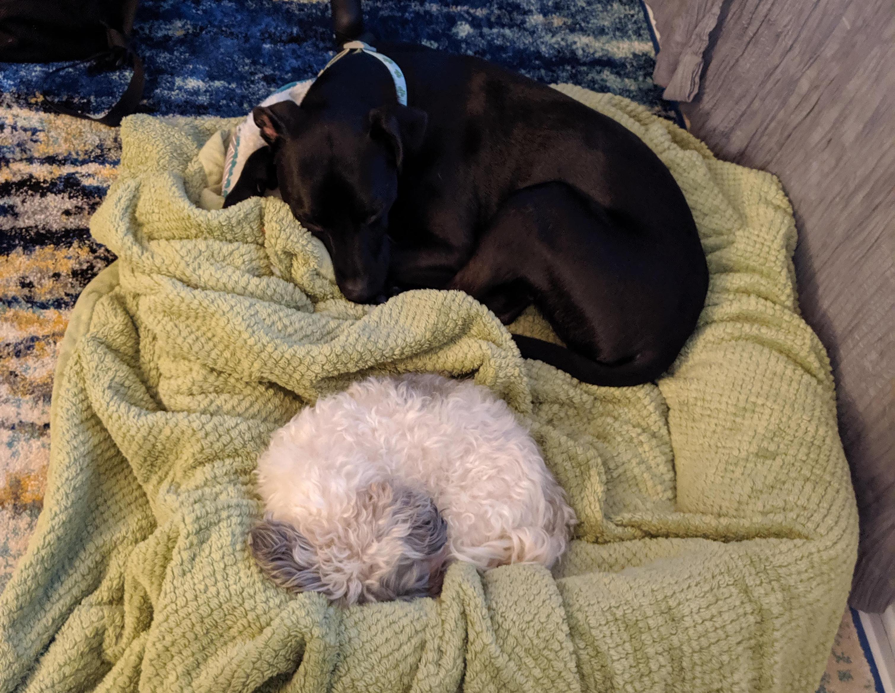

Background
I'm a UX designer looking to get back into development! I am an empathetic critical thinker, always working on keeping users core needs at the root of all of my solutions.
I grew up in the DMV, but now call California my home! New to the L.A., I love exploring and so far, some of my favorite places include Little Tokyo, The Getty, and LACMA. Outside of exploring, I love baking things, working on my bullet journal (I’m a huge fan of lists!), organizing, and hanging out with my fiancé and 2 dogs (Lilly - 13, and Kylo - 2).
Goals
I want to master the process of building web sites and increase my knowledge, skills and abilities in:
- HTML
- CSS
- JavaScript
- Ruby
- Rails
I have 7 years of experience in UX design, mostly in the startup space. I would love to utilize my UX and Development skills to help a small start up solve complex user problems in a strategic, iterative, and creative way.